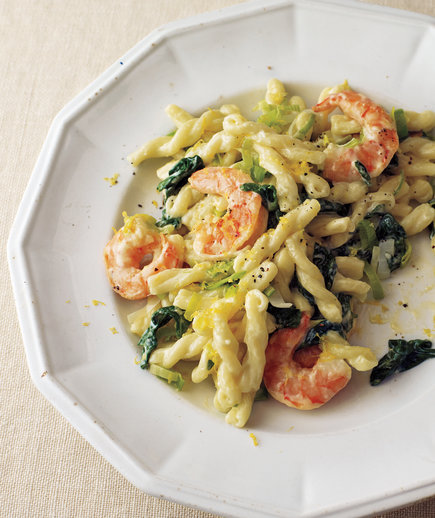

∾ Daily Specials ∾
"Eating is a necessity, but cooking is an art"
GROUND BEEF ENCHILADA ZUCCHINI BOATS
INGREDIENTS:
1 tablespoon olive oil
1/2 cup diced red onion
1 lb. lean ground beef
2 garlic cloves, minced
1 teaspoon smoked paprika
1 teaspoon ground cumin
salt to taste
3 large zucchinis, sliced in half lengthwise and scooped out to create a “boat”
1 1/2 cups of old el paso red enchilada sauce
1/2 cup shredded cheddar cheese
1/4 cup chopped fresh cilantro
OPTIONAL TOPPINGS:
diced tomatoes
diced green onions
diced avocado
.jpg)
INSTRUCTIONS
Heat a medium large skillet to medium high heat.
Add olive oil and onions to the pan. Saute until translucent or soft, about 2-3 minutes.
Add in the ground beef. Cook until there is no more pink in the meat, breaking up meat into small pieces along the way.
Add in minced garlic, smoked paprika, ground cumin, and then salt to taste. Stir until combined.
In a 13×9 inch baking dish, add zucchini boats flesh side facing up. Scoop the ground beef mixture into the “boat” part of the zucchini.
Pour the red enchilada sauce over the filled zucchini boats.
Sprinkle with shredded cheddar cheese.
Cover the baking dish with tin foil. Bake for 20 minutes at 350.
Remove the tin foil from the pan. Bake for another 5 minutes uncovered.
Garnish with fresh cilantro. Serve.
Add additional toppings for more deliciousness! 🙂
diced tomatoes
Shrimp, Leek, and Spinach Pasta
Ingredients
¾ pound gemelli, fusilli, or other short pasta
2 tablespoons unsalted butter 2 leeks (white and light green parts only), halved lengthwise then crosswise
kosher salt and black pepper
1 pound peeled and deveined medium shrimp (raw)
finely grated zest of 1 lemon ¾ cup heavy cream
10 ounces baby spinach (about 12 cups)

How to Make It How to Make It
Step 1
Cook the pasta according to the package directions; drain and return it to the pot.
Step 2
Meanwhile, heat the butter in a large skillet over medium heat. Add the leeks, ½ teaspoon salt, and ¼ teaspoon pepper and cook, stirring occasionally, until the leeks have softened, 3 to 5 minutes.
Step 3
Add the shrimp and lemon zest and cook, tossing frequently, until the shrimp is opaque throughout, 4 to 5 minutes more.
Step 4
Add the cream and ½ teaspoon salt to the pasta in the pot and cook over medium heat, stirring, until slightly thickened, 1 to 2 minutes. Add the shrimp mixture and the spinach and toss to combine.